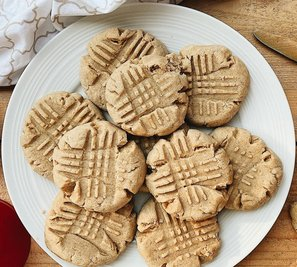

You don't need a fancy recipe for peanut butter cookies, you only need 3 ingredients and 15 minutes of spare time to prep. Even better, they bake in only 10 more minutes. Imagine: fresh baked cookies that taste amazing in under a half hour, using a few ingredients you probably already have on hand! This is one of my all time favorite recipes, these cookies are so easy and fast to make, and everybody will love them. (Unless they have peanut allergies. You should probably check before sharing. They do work with sunbutter though, I've tried it.)
P.S. These work with stevia instead of sugar, too. Check your packaging for the best substitution ratio. They're also good with either banana or flax as an egg replacement.